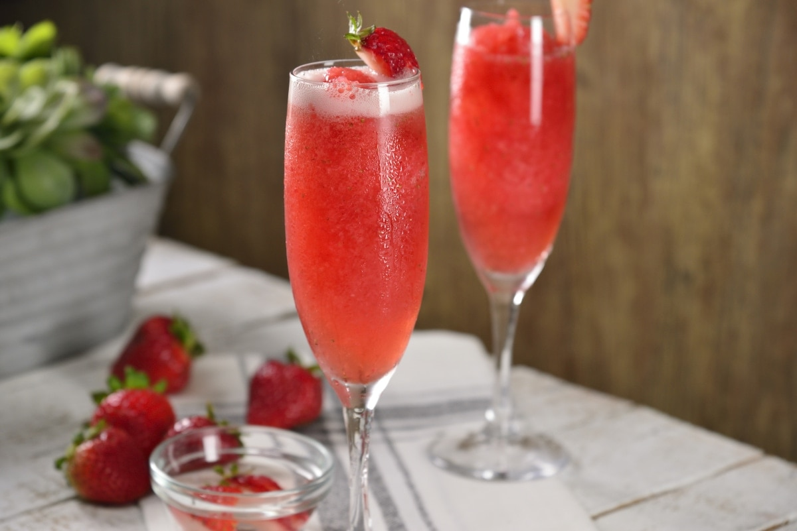
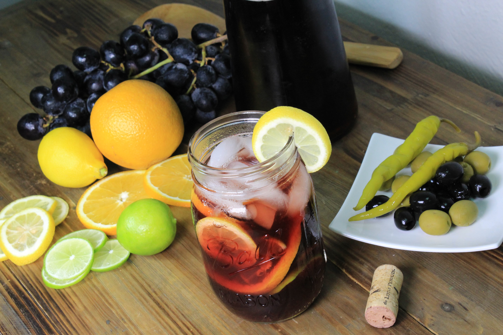
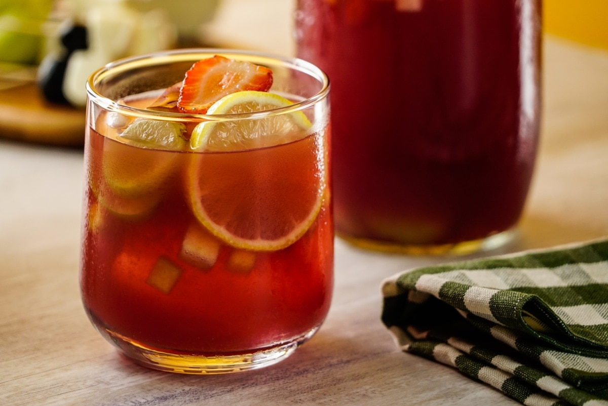
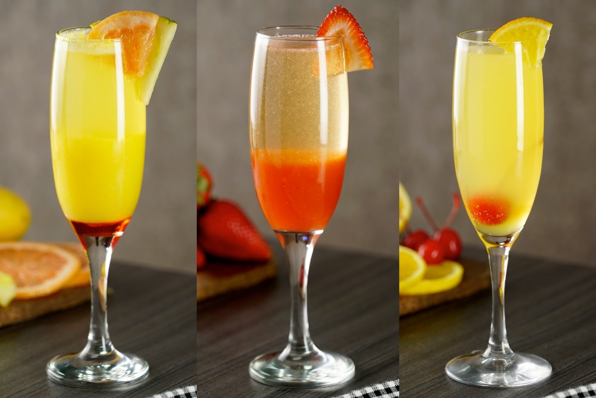
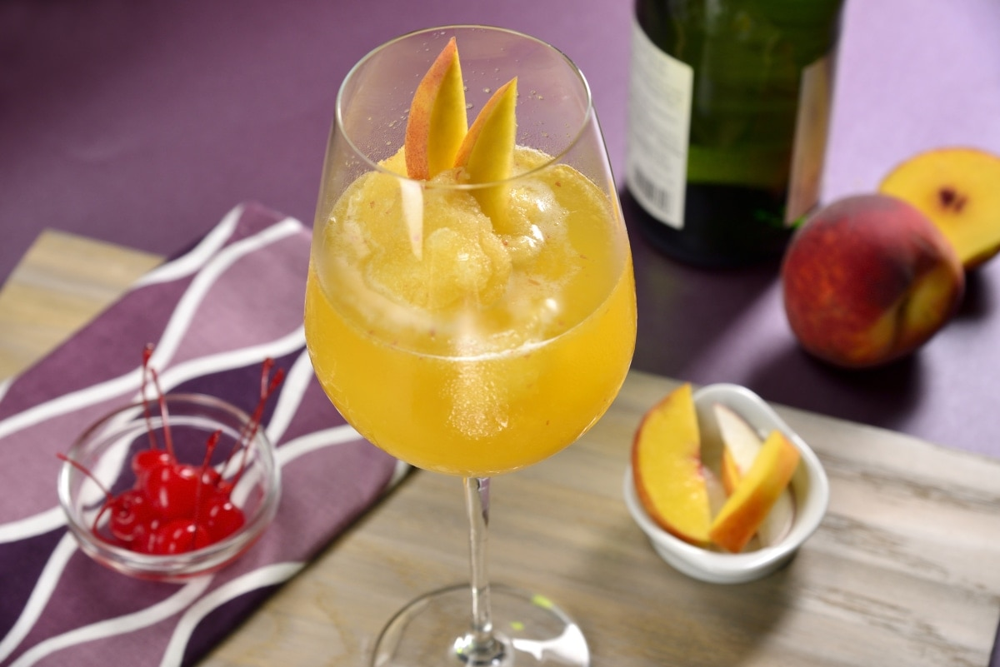

Bebidas con Vino
Bebidas con Vino
Raspado de fresa con Vino Espumoso
Ingredientes
- 1 taza de hielo
- 1/2 tazas de fresa, sin rabito
- 2 sobres de Canderel
- 1 onza de vodka
- 1 taza de vino, espumoso rosado
- 1 fresa, para decorar
Preparación
- En la licuadora, coloca los hielos, las fresas, el Canderel y el vodka.
- Licúa por 3 minutos hasta que se haga un raspado.
- Vierte el raspado en un vaso alto y rellena con el vino espumoso.
- Decora con una fresa y disfruta de inmediato.
Tinto de Verano
Ingredientes
- 1 litro de vino tinto
- 1 litro de refresco de limón
- 4 onzas líquidas de vermouth
- 4 limones amarillos
- 4 limones
- 1 naranja
- hielos, al gusto
Preparación
- Corta los limones y la naranja en rebanadas delgadas.
- Coloca en una jarra los citricos y el hielo. Adiciona el vino, refresco y el vermut. Revuelve y sirve.
Clericot Navideño
Ingredientes
- 2 manzanas
- 2 peras
- 1/2 melones
- 1 taza de uva
- 1 taza de fresa
- 1 taza de vino tinto
- 1/4 tazas de jugo de limón amarillo
- 1/4 tazas de jugo de naranja
- 1/4 tazas de jarabe natural
- suficiente de agua mineral
- suficiente de hielo
- suficiente de limón amarillo, para decorar
Preparación
- Sobre una tabla corta la manzana, el melón y la pera en cubitos; las uvas y las fresas en rebanadas.
- Coloca las frutas dentro de una jarra y añade el vino tinto, el jugo de limón amarillo, el jugo de naranja, el jarabe natural, y el agua mineral.
- Sirve con hielo, decora con el limón amarillo y disfruta.
Mimosa Tropical
Ingredientes
1 toronja
1 mango
1/4 tazas de piña
al gusto de granadina
suficiente de champagne
1 rodaja de piña, en cuartos para decorar
1 rodaja de toronja, en cuartos para decorar
Preparación
- Licúa el jugo de toronja con el mango y la piña.
- En una copa flauta vierte un poco de granadina, agrega hasta la mitad la preparación anterior y rellena con la champaña.
- Decora con una rodaja de piña y toronja.
Bellini Frappé
Ingredientes
- 1/2 tazas de hielo
- 2 onzas de néctar de durazno
- 1/2 duraznos, en rebanadas
- 1 onza de vino, espumoso seco
- 1 rebanada de durazno, para decorar
Preparación
- Licúa los hielos, el néctar de durazno y el durazno hasta obtener un frappé.
- Vierte en una copa para vino o champaña y rellena con el vino espumoso.
- Decora con una rebanada de durazno.